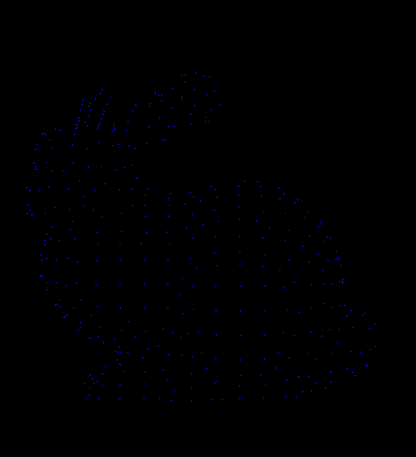
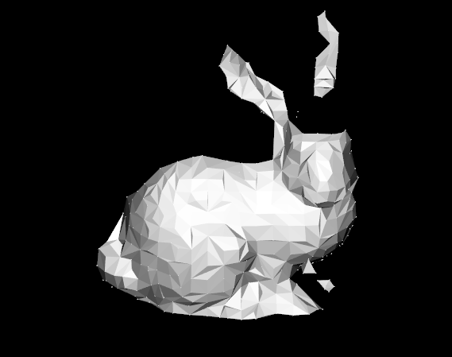

使用贪婪投影三角化对有向点云进行三角化
具体方法为：
（1）先将有向点云投影到某一个局部二维坐标平面内
（2）在坐标平面内进行平面内的三角化
（3）根据平面内三位点的拓扑关系获得一个三角网格曲面模型
1
2
3
4
5
6
7
8
9
10
11
12
13
14
15
16
17
18
19
20
21
22
23
24
25
26
27
28
29
30
31
32
33
34
35
36
37
38
39
40
41
42
43
44
45
46
47
48
49
50
51
52
53
54
55
56
| #include <iostream>
#include <pcl/point_types.h>
#include <pcl/kdtree/kdtree_flann.h>
#include <pcl/io/pcd_io.h>
#include <pcl/features/normal_3d.h>
#include <pcl/surface/gp3.h>
#include <pcl/io/vtk_io.h>
int main() {
//将一个XYZ点类型PCD文件打开并存储到对象中，注意bun0.pcd为二进制的格式，这里需要转换一下
pcl::PointCloud<pcl::PointXYZ>::Ptr cloud(new pcl::PointCloud<pcl::PointXYZ>);
pcl::PCLPointCloud2 cloud_blob;
pcl::io::loadPCDFile("bun0.pcd",cloud_blob);
pcl::fromPCLPointCloud2(cloud_blob,*cloud);
//估计法线
pcl::NormalEstimation<pcl::PointXYZ,pcl::Normal> n;
pcl::PointCloud<pcl::Normal>::Ptr normals(new pcl::PointCloud<pcl::Normal>);
pcl::search::KdTree<pcl::PointXYZ>::Ptr tree(new pcl::search::KdTree<pcl::PointXYZ>);
tree->setInputCloud(cloud);
n.setInputCloud(cloud);
n.setSearchMethod(tree);
n.setKSearch(20);
n.compute(*normals);
//将点云和法线组合起来成为PointNormal类型
pcl::PointCloud<pcl::PointNormal>::Ptr cloud_with_normals(new pcl::PointCloud<pcl::PointNormal>);
pcl::concatenateFields(*cloud,*normals,*cloud_with_normals);
//创建针对点法式点云的k搜索树
pcl::search::KdTree<pcl::PointNormal>::Ptr tree2(new pcl::search::KdTree<pcl::PointNormal>);
tree2->setInputCloud(cloud_with_normals);
//实例化三角化对象
pcl::GreedyProjectionTriangulation<pcl::PointNormal> gp3;
//结果容器
pcl::PolygonMesh triangles;
gp3.setSearchRadius(0.025);//设置连接点之间的最大距离（三角形的最大边长）
gp3.setMu(2.5);//设置被样本点搜索其邻域点的最远距离为2.5
gp3.setMaximumNearestNeighbors(100);//设置样本点可以搜索的临近点个数
gp3.setMaximumSurfaceAngle(M_PI/4);//设置某点法线方向偏离样本点法线的最大角度
gp3.setMinimumAngle(M_PI/18);//设置三角化后得到的三角形内角的最小的角度为10
gp3.setMaximumAngle(2*M_PI/3);//设置三角化后得到的三角形内角的最大的角度为120
gp3.setNormalConsistency(false);//设置该参数保证法线朝向一致
gp3.setInputCloud(cloud_with_normals);//设置输入点云为有向点云
gp3.setSearchMethod(tree2);//搜索方式
gp3.reconstruct(triangles);//提取三角化
std::vector<int> parts=gp3.getPartIDs();
std::vector<int> states=gp3.getPointStates();
pcl::io::saveVTKFile("mesh.vtk",triangles);
return 0;
}
|

原始点云数据

三角化点云数据